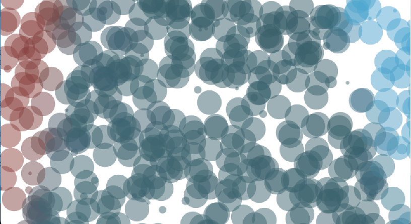
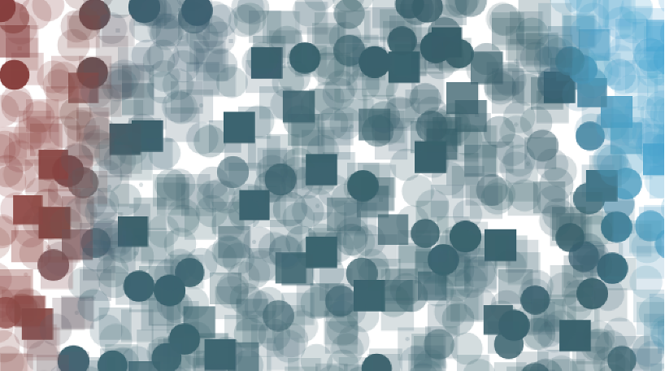
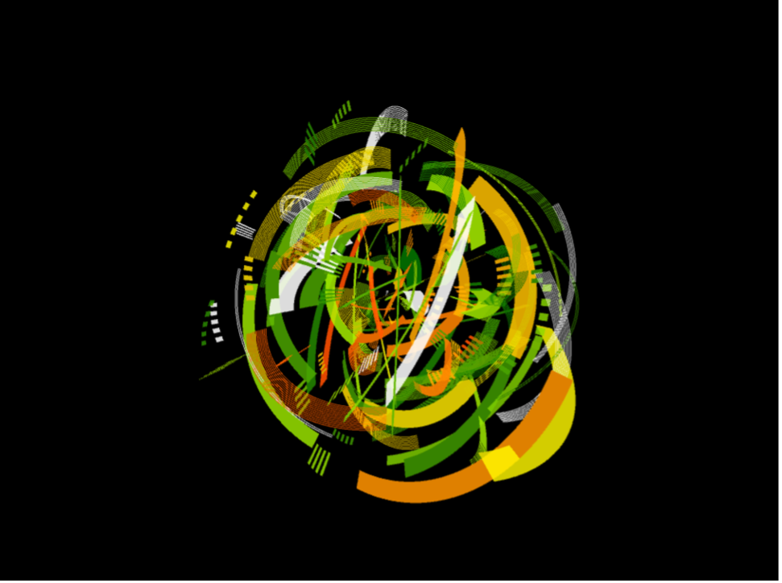
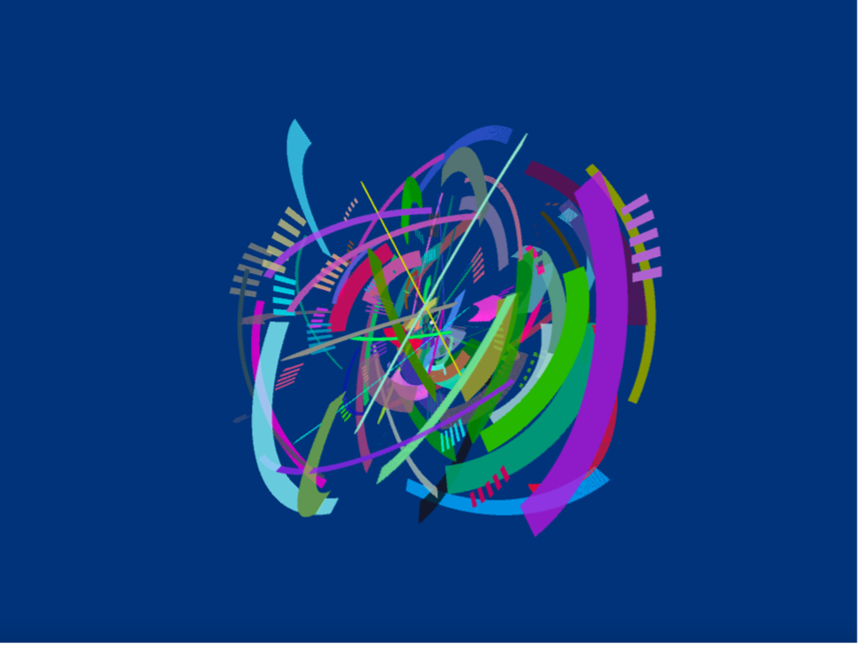
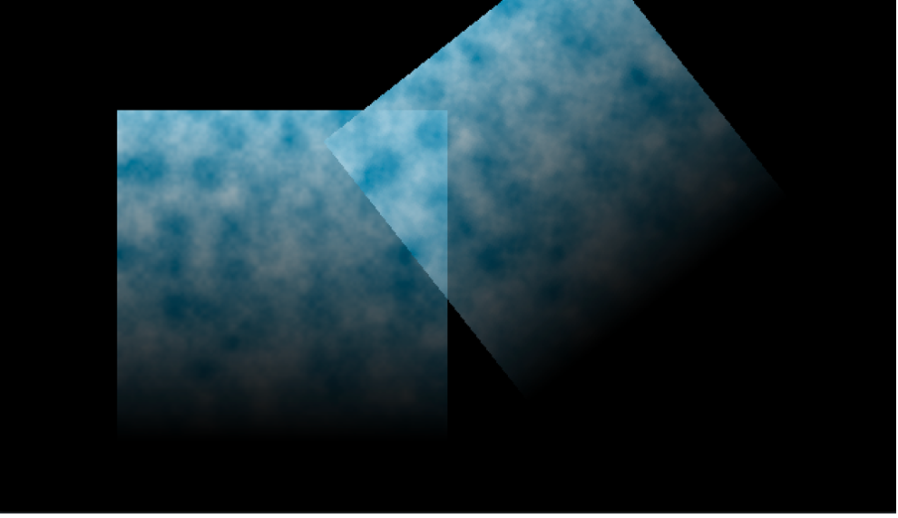
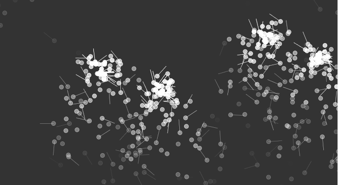
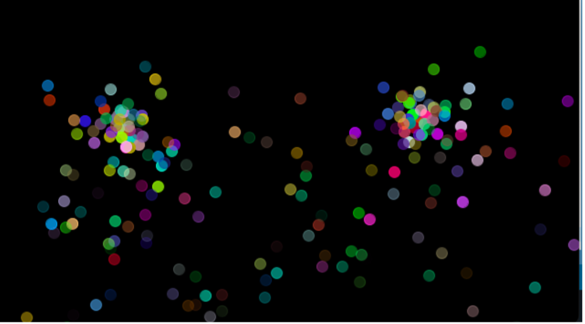
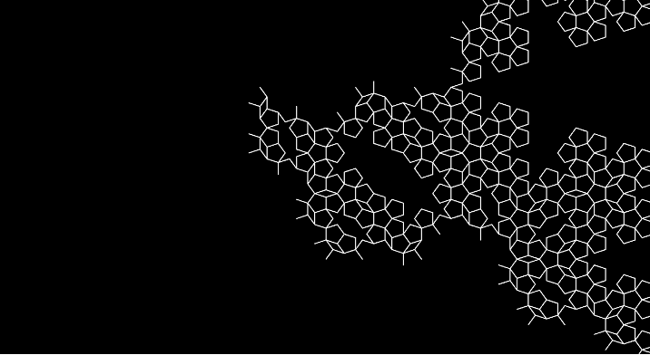
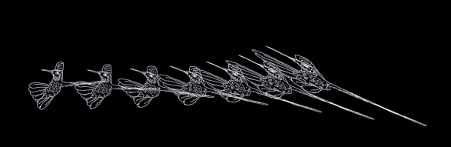
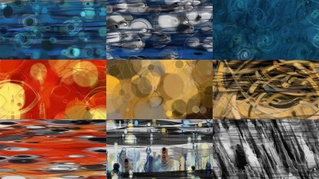

Pointillism


I changed the transparency to make the colours have different shades and a more layered sense. Then, when drawing points, I added randomness to the shapes. In the original code, only circular points were drawn. In the modified version, a circular or square shape is randomly selected for drawing each time. In this way, through the mixture of different shapes, the image can be made more rich and diverse, avoiding a single visual effect.
Rotating arcs


I added some interactive functions. When the mouse is pressed, the colour mode can be switched, allowing users to change the colour style. When a key on the keyboard is pressed, the graphics will be reset to generate a new geometric arrangement, enhancing interactivity. Also, I added several different colours for the background that can be switched, giving users a better experience and a sense of participation.
Create Image

Originally, when the mouse was moved, the square would only change its position. But now, when the mouse is moved, the image will not only follow the movement of the mouse but also rotate according to the direction and position of the mouse’s movement. This makes the image more interactive and enhances the visual interest. In addition, I have also added some patterns to the square that only had a monotonous colour, increasing some aesthetic appeal.
Multiple Particle Systems


I changed the monotonous white dots into many dots of different colours, that is, generating random colours. This makes the picture less monotonous and at the same time the visual effect is more abundant.
Penrose Snowflake

I replaced the originally monotonous white brushstrokes with rich gradient colours. The colours change randomly, increasing the aesthetic appeal and artistry. Moreover, it can be made larger or smaller by mouse control, allowing one to observe its details and also its entirety. Then I also changed the colour of the background, enhancing the visual richness.
A Critical History of Computer Graphics and Animation

In this document, I think the early algorithms and software development parts of MIT and Harvard are particularly interesting. In this section, it tells how researchers used computers and display devices to solve various problems and developed technologies that can ease the programming burden on users, which has played a crucial role in the birth of modern image processing software such as Photoshop.
I like this part because it shows how computer graphics has evolved from the most basic image processing technology into the complex tools widely used in design, animation, game development, and other creative industries today. Especially the development of “Coons Patch” – a method for describing surfaces, which laid the foundation for modern graphic design tools such as B-spline surfaces and NURB surfaces. These technologies not only improve the accuracy of design but also allow designers to express their creativity more intuitively. These technologies have also influenced the development of later interactive graphical interfaces.
After understanding these basic technologies, I can apply them to future graphic design projects, especially in animation production. I hope to be able to combine modern design software such as Maya and Blender for complex surface design and animation creation, and explore how to combine these historical algorithms with modern technologies to produce more exquisite 3D works. By understanding the history of these technologies, I can better understand the principles behind the tools in future design work and thus create more innovative works.
A Companion to Digital Art

In “A Companion to Digital Art”, I find the part on “Generative Art Theory” particularly interesting. Generative art is an art form in which preset algorithms or rules are used to let the system generate works independently. This art form not only encompasses computer art but also includes early artworks generated through language and mathematical formulas. This part attracts me because it shows how science and complex system theory can be combined with artistic creation to create art full of possibilities.
I like it because the concept behind generative art breaks the traditional notion that artists have complete control over the creative process. Artists set the rules, and the system generates works through these rules. This interactivity and uncertainty give life to the work and infinite possibilities for change. In addition, the complex system theory in generative art also makes me feel the beauty at the intersection of art and science.
Later, I can use the algorithms and programming techniques in generative art to create some highly interactive and dynamically changing works. For example, by learning programming platforms like Processing or TouchDesigner, I can design artworks that are generated in real time after audience participation and interaction. I can also combine artificial intelligence to let the system generate new art forms through learning, thereby creating artworks that continuously evolve on their own. Generative art provides me with infinite imaginative space. By learning related technologies, I think I can use these concepts to create more complex, interactive, and innovative works.